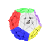

Hola. Mi nombre es Joaquin :) . Tengo 21 años, bien vividos, en los que he logrado un par de cosas.
Me considero un hobbyist, pues me gusta saber un poco de todo, a veces un mucho de algunas cosas. Mis temas favoritos tienen qué ver con el comportamiento, razón por el que estudio Psicología.
Me gusta leer, escribir, programar un poco, viajar, consumir y crear.
Tengo el récord nacional del megaminx, además de que tengo buen nivel en algunos otros cubos, como el 3x3 normal y el armado con una mano. Tengo un canal de YouTube del tema. También tengo otro canal que amo donde subo cualquier cosa y mis amigos me siguen, que contiene una serie de Minecraft y vlogs tontos.
